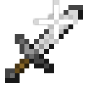

Golden Head
Fiche d'identité
Type : Nourriture
Restaure : 20 
 Régénération IV (0:05)
Régénération IV (0:05)
 Résistance au feu (0:15)
Résistance au feu (0:15)
 Résistance II (0:10)
Résistance II (0:10)
 Absorption V (0:20)
Absorption V (0:20)
 Force II (0:05)
Renouvelable : Oui
Stackable : Oui (64)
Rareté : Épique
Description
La Golden Head est apparue dans les UHC quand vous tuez un joueur.
Crafting
 |
|
|
|
 |
|
|
|
|
Utilisation
La Golden Head régénère instantanément tous les cœurs et la saturation du joueur. Il contient les mêmes effets que la pomme dorée enchantée mais en version plus fort et moins longtemps (en comptant l'ajout de l'effet de force). Il est conseillé de manger une Golden Head qu'en cas où la vie est vraiment en danger, et pas de l'utiliser pour ses effets en PVP.
Achivement :
Historique de Version
- 3.1 : Golden Head ajouté au jeu.